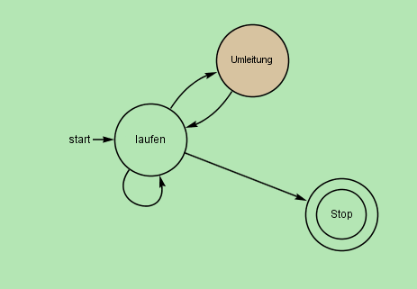
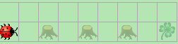
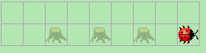
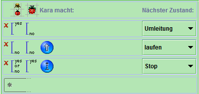
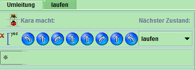

Erstellt von Aussenstelle - Code von RegenJoho
Aufgabenstellung von 'Kleeblattsuche im Wald I':
Kara sucht ein Kleeblatt. Er weiss, dass eines geradeaus vor ihm liegt - er muss nur um die Bäume herumlaufen. Glücklicherweise stehen nie zwei Bäume nebeneinander. Schreiben Sie ein Programm, das ihn bis zum Kleeblatt führt!
Unsere Lösung:

Abbildung 1: Bild des Ablaufs des endlichen Automaten

Abbildung 2: Kara (Welt 1) vor Start

Abbildung 3: Kara (Welt 1) nach dem Ablauf des Programms

Abbildung 4: Zustand 'laufen'

Abbildung 5: Zustand 'Umleiten'
Wir hatten keine Probleme. Das Programm funktioniert bei allen aufgeführeten Welten.
Der Code kann herruntergeladen werden
Aufgabenstellung von 'Kleeblattsuche im Wald II':
Erweitern Sie Ihr Programm von Aufgabe 4 so, dass Kara auch mit mehreren nebeneinander stehenden Bäumen fertig wird! Hinweis: Die Lösung dieser Aufgabe erfordert zwei Zustände! Warum reicht ein Zustand nicht aus?
Created with HTML